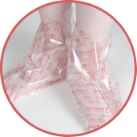
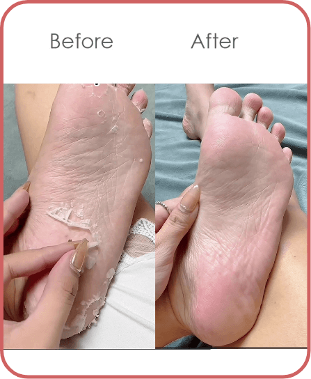
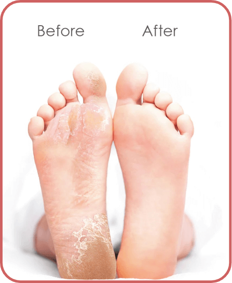

(Thông tin tính đến năm 2017)

SỬ DỤNG ĐƠN GIẢN VỚI 3 BƯỚC
-
 1CHO CHÂN VÀO TÚI Cắt miệng túi dọc theo đường kẻ màu đỏ, cho chân vào bên trong túi ủ và cố định miệng túi bằng miếng dán có sẵn.
-
2NGÂM CHÂN Ủ chân trong túi Baby Foot khoảng 30-60 phút (tùy sản phẩm) để cho dưỡng chất thấm sâu vào da. Trong thời gian chờ có thể hoạt động và di chuyển nhẹ nhàng.
-
3CHO CHÂN VÀO TÚI Gỡ bỏ túi ủ chân Baby Foot, rửa sạch chân bằng xà bông và nước ấm.
THỜI GIAN SẢN PHẨM PHÁT HUY CÔNG DỤNG
Trong vòng 5~10 ngày sau, các lớp tế bào da chết cứng đầu sẽ bong ra
một cách tự nhiên. Thay vào đó là lớp da mới hồng hào và mịn màng
hơn.

QUÁ TRÌNH BONG DA CHẾT SẼ DIỄN RA NHANH CHẬM KHÁC NHAU TUỲ MỖI NGƯỜI

BABY FOOT CÓ ĐỦ 5 TIÊU CHÍ VƯỢT TRỘI GIÚP MANG LẠI ĐÔI CHÂN MỊN MÀNG, QUYẾN RŨ
FDA approved
pH3.5
Hyproxy Acid under 10%
Patch Test Done
17Natural Extracts
HÃY TRẢI NGHIỆM THỬ SẢN PHẨM TÚI Ủ CHÂN BABY FOOT ĐẾN TỪ NHẬT BẢN HIỆU QUẢ MANG LẠI SẼ KHIẾN BẠN THỰC SỰ BẤT NGỜ!


CẨN THẬN VỚI HÀNG GIẢ VÀ HÀNG KÉM CHẤT LƯỢNG
FAQ
-
Q1. Cơ chế làm bong da chết bàn chân là gì ?
A1: Sản phẩm chứa thành phần glycolic acid, hiệu quả cao đối với tế bào chết cứng đầu. Glycolic acid tác động trực tiếp lên tế bào chết, làm mềm vùng da chai cứng ở bàn chân, giúp da chết bong ra một cách dễ dàng. -
Q2. Sản phẩm sử dụng bao lâu thì có hiệu quả ?
A2: Sau 5 đến 10 ngày sử dụng, da chết bàn chân sẽ bong ra toàn bộ, thay vào đó là lớp da mới láng mịn, hồng hào. -
Q3. Sản phẩm có gây tác dụng phụ gì không ?
A3: Thành phần của Baby Foot được chiết xuất từ axit trái cây thiên nhiên, hoàn toàn lành tính và không gây tác dụng phụ. Sản phẩm đã được kiểm định, công nhận và xuất bán tại nhiều nước trên thế giới. Tuy nhiên, đối với một số trường hợp đặc biệt như dị ứng, da có vết thương hở, cần lưu ý đọc kỹ hướng dẫn sử dụng trước khi dùng. -
Q4. Có thể sử dụng Baby Foot thường xuyên không ?
A4: Sau khi dùng Baby Foot nếu bạn muốn sử dụng lại nên chờ từ 2 -3 tháng. Vì các lớp tế bào chết sần sùi sẽ bong ra thay thế bằng lớp da mới, thời gian 2 -3 tháng sau sẽ là thời điểm thích hợp để sử dụng lại sản phẩm. -
Q5. Những đối tượng không nên sử dụng Baby Foot ?
A5: Đối với trẻ em, làn da còn rất nhạy cảm, khuyến cáo không nên sử dụng sản phẩm. Trường hợp muốn trải nghiệm sản phẩm, nên test một ít lên da trước khi quyết định sử dụng sản phẩm
Lưu ý: Không sử dụng cho phụ nữ đang mang thai, cho con bú và bệnh nhân bị tiểu đường.